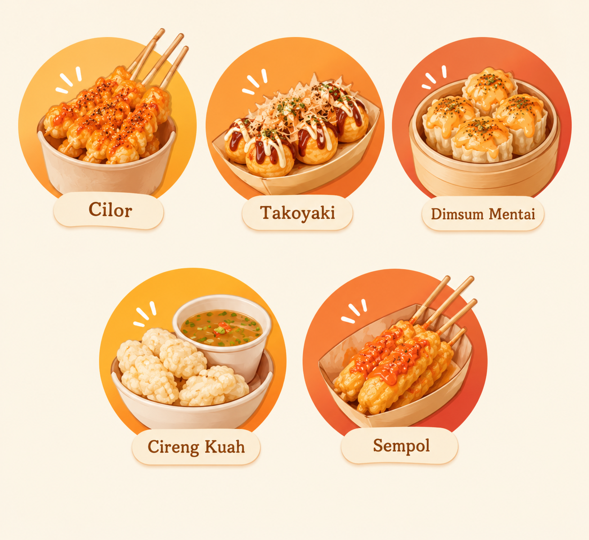

About
Profil

Dapur Jajan merupakan website kuliner yang menyajikan berbagai informasi tentang jajanan favorit masyarakat Indonesia. Mulai dari cilok, takoyaki, dimsum mentai, cireng kuah, hingga sempol. Website ini dibuat sebagai tempat berbagi informasi, resep, dan inspirasi makanan ringan yang lezat serta mudah dibuat. Dengan tampilan yang menarik dan informasi yang sederhana, Dapur Jajan hadir untuk menemani siapa saja yang ingin mengenal dan mencoba berbagai jajanan.
Sejarah
Dapur Jajan berawal dari kecintaan terhadap berbagai macam jajanan yang sering dijumpai di sekitar rumah. Melihat banyaknya makanan ringan yang memiliki cita rasa unik dan digemari berbagai kalangan, muncullah ide untuk membuat sebuah website yang mengumpulkan informasi dan resep jajanan dalam satu tempat. Dapur Jajan kemudian dikembangkan sebagai media berbagi resep, inspirasi kuliner, dan informasi seputar makanan ringan.
Visi & Misi
Visi: Menjadi rumah resep jajanan Indonesia yang hangat dan mudah dipraktikkan siapa saja.
Misi:
- Mendokumentasikan resep jajanan kaki lima dan kekinian.
- Menyajikan langkah-langkah yang jelas dengan bahan mudah dicari.
- Mengajak anak muda melestarikan jajanan kaki lima.
Tujuan
- Menyebarkan resep jajanan favorit secara gratis.
- Membangun komunitas pecinta jajan.
- Melatih kemampuan membuat website statis dengan HTML, CSS, dan JavaScript.